How often should the lag-free demand network be refitted, which recency half-life suits it, and does pretraining on ERA5, CAMS, and ENS rows together help?
Correction (2026-11-04). The gap to K2-S1 above 24 h of lead on this page is voided. K2-S1 mixes in experiment 404's lag-free head, which took its weather from the freshest run at each target's valid time (leads of 9 to 33 h at every horizon), a look-ahead that a forecast made at the origin does not have. The gap at 0 to 24 h is unchanged, and comparisons that do not involve K2-S1 are unaffected. The rebuilt K2-S1 will restate the gaps. Evidence: experiments 531 and 532.
Refitting the lag-free demand network every day scored 0.065 points of CRPS better than refitting it every week at the eight and 0.061 better at the six (lower is better; Bonferroni intervals exclude zero), and refitting twice a week scored 0.036 and 0.041 better. The daily refit leaves the network 0.091 points (eight) and 0.071 points (six) behind K2-S1, the network that reads lagged power, so it closes 42% (eight) and 46% (six) of the weekly network's gap of 0.156 and 0.132. Neither a 30-day nor a 60-day recency half-life reached the -0.05 bar against the 90-day half-life, and the mixed pretraining on ERA5, CAMS, and ENS rows scored worse than the ERA5 and CAMS pretraining of experiment 510.
We asked whether refitting more often than weekly, or changing the recency weight, or pretraining on ENS rows as well, closes more of the gap to K2-S1. All arms are lag-free, restart each fine-tune from the fold's pretrained weights, average two seeds, and are scored on experiment 470's row set, in points of effective capacity. "The eight" are the MVA-only Primaries and "the six" are the signed-MW Primaries. Headline scores use rows with no labelled event. Each model scores only the origins from its own cutoff to the next cutoff of the same cadence.
Verdict: partly supported. Prediction P1 held: L-1d beat L-3d, which beat L-Ww, and L-1d ended 0.07 to 0.09 behind K2-S1, inside the predicted 0.05 to 0.12 (the L-3d gains of 0.036 and 0.041 are inside the predicted 0.03 to 0.08). P2 held: L-Ww-30 did not beat L-Ww and its leak was larger. P3 failed: L-mix scored worse than L-Ww by 0.06 and 0.05, a result outside the predicted "less than 0.05 better".
Figures
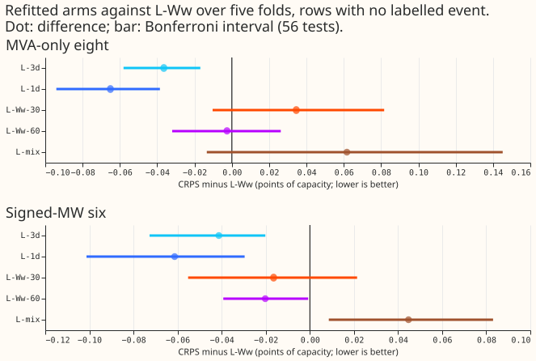
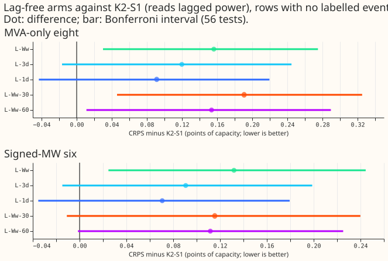
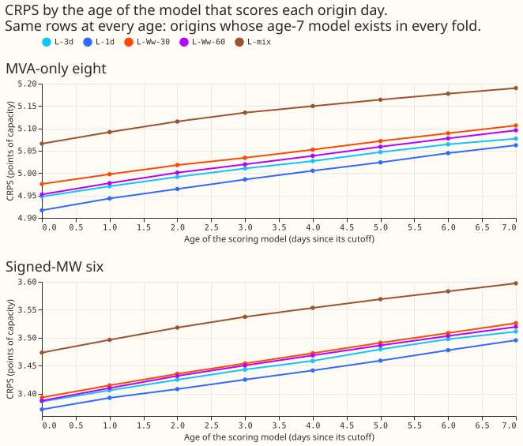
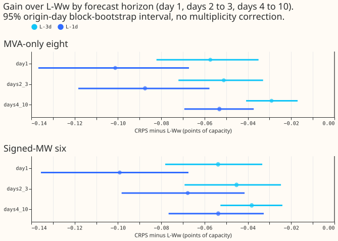
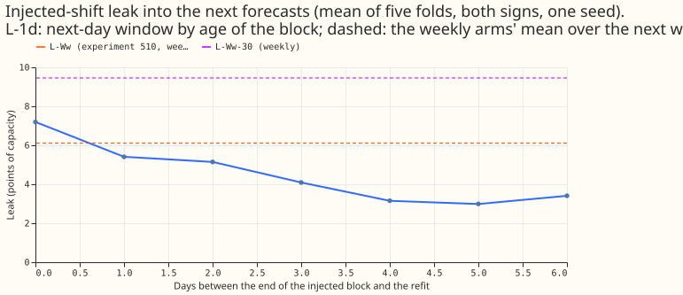
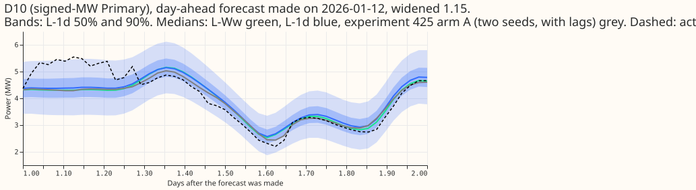
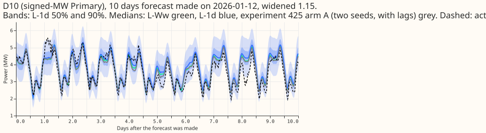
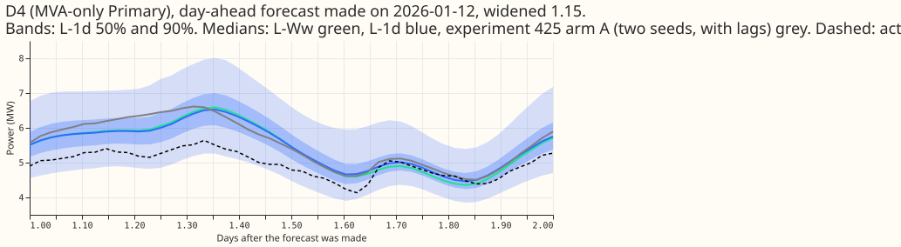
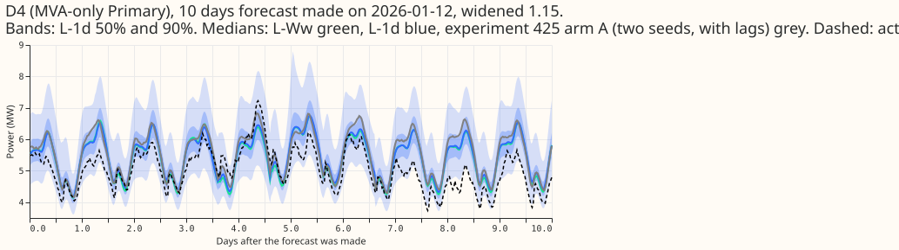
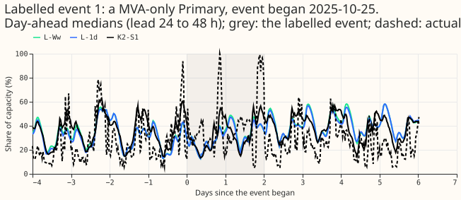
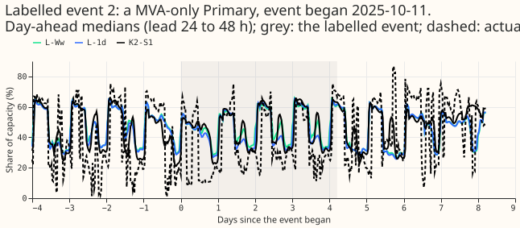
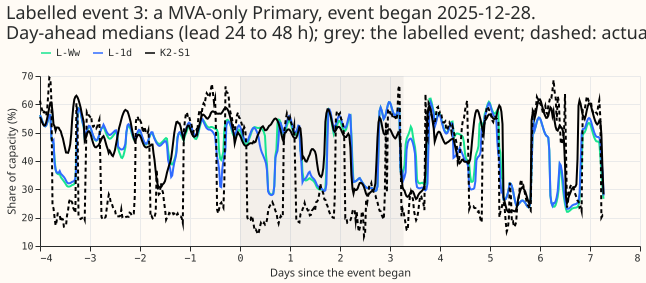
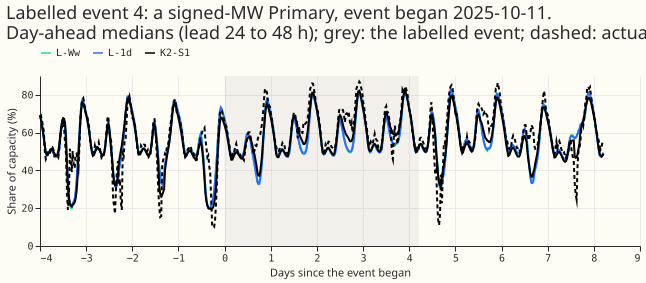
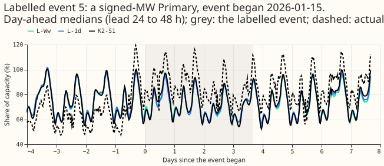
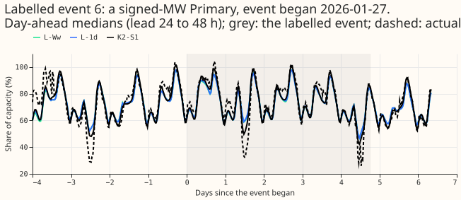
Results
- Absolute CRPS (eight / six), five folds, two seeds. L-Ww 4.920 / 3.555; L-3d 4.883 / 3.513; L-1d 4.854 / 3.493; L-Ww-30 4.954 / 3.538; L-Ww-60 4.917 / 3.535; L-mix 4.981 / 3.599; K2-S1 4.763 / 3.423; A-pool 4.682 / 3.457.
- Paired contrasts against L-Ww (Bonferroni interval, corrected for 56 tests). L-3d -0.036 [-0.058, -0.017] eight, -0.041 [-0.071, -0.019] six. L-1d -0.065 [-0.096, -0.038] eight, -0.061 [-0.104, -0.028] six. L-Ww-30 +0.035 [-0.010, +0.079] eight, -0.016 [-0.055, +0.022] six. L-Ww-60 -0.003 [-0.032, +0.025] eight, -0.020 [-0.039, -0.001] six. L-mix +0.062 [-0.015, +0.148] eight, +0.045 [+0.009, +0.081] six. L-1d minus L-3d -0.029 [-0.050, -0.009] eight, -0.020 [-0.041, -0.002] six. The minimum detectable effect with two seeds is 0.164 (eight) and 0.123 (six), experiment 510's values, so every gain here is below it: the intervals exclude zero because the contrasts are paired on the same rows, but a gain "of at least 0.05" is not established.
- Gap to K2-S1 (unadjusted 95% block interval). L-1d +0.091 [+0.012, +0.168] eight, +0.071 [+0.005, +0.135] six; L-Ww +0.156 and +0.132. The unadjusted intervals exclude zero, but the Bonferroni intervals of L-1d and L-3d against K2-S1 include zero at both groups ([-0.039, +0.216] eight for L-1d), so the data do not rule out that the daily refit reaches K2-S1.
- Decision rule for the daily refit. The point estimate and the Bonferroni interval pass at both groups. q99 pinball loss is 0.286 against 0.287 (eight) and 0.183 against 0.184 (six), inside +0.02. Cold winter nights: L-1d minus L-Ww -0.124 [-0.182, -0.069] eight, -0.060 [-0.103, -0.017] six, so no worse. The injected-shift leak is a reported trade-off (below). Twice weekly does not reach the -0.05 point estimate. L-Ww-30 and L-Ww-60 fail the rule, and L-mix is worse.
- Horizon bands, L-1d minus L-Ww (eight / six). Day 1 -0.101 / -0.099; days 2 to 3 -0.087 / -0.068; days 4 to 10 -0.053 / -0.054; the 12 to 36 hour band -0.090 / -0.077. The gain is largest on the first day but reaches days 4 to 10, so the daily refit's new rows help beyond the short leads they reach directly.
- Staleness curve (figure 2). CRPS rises about 0.02 points per day of model age in every arm (L-1d at the eight: 4.917 at age 0 to 5.062 at age 7). The curve is on the origins whose age-7 model exists in every fold, so its levels are higher than the headline. Experiment 510's L-M minus K2-S1 does not grow with the week of the month (0.46, 0.37, 0.41, 0.37, 0.16), so the curve alone does not isolate staleness from the weeks' differing weather.
- Injected-shift leak (one seed, five folds, both signs; descriptive). L-1d: 7.2 points of capacity on the day after the block, 5.4, 5.1, 4.1, 3.2, 3.0, and 3.4 on the following days. L-Ww-30: 9.5, against 6.1 for experiment 510's L-Ww (range across folds 3.4 to 14.5). The weekly L-Ww-30 leaks 3.4 points more than L-Ww, so a shorter half-life makes the forecast follow an injected shift more closely. The daily refit's leak is larger the day after a bad block and fades within about 5 days.
- Real events and holidays. Christmas week 2025, L-1d minus L-Ww: -0.162 [-0.261, -0.070] eight,
-0.144 [-0.244, -0.045] six. The plan's noise floor for one Christmas is 0.27 at the eight and
0.26 at the six; both differences are smaller than it. The slice holds the 22 to 31 December
target half-hours with no labelled event (22,580 rows at the six); the unsliced
xmas_sixset in contrasts.csv (28,800 rows) gives -0.234. For 1 to 14 January 2026 the differences are -0.069 [-0.119, -0.023] (eight) and -0.104 [-0.171, -0.029] (six). - Tails. q01 and q99 pinball loss and coverage are within 0.003 of L-Ww at both groups for L-1d and L-3d (largest gap: six-group q99 coverage, 0.9913 against 0.9891); see absolute.csv in the private data folder. Coverage of the 99% quantile is 0.995 (eight) and 0.991 (six).
- Avoidable-curtailment cost at the six, f = 0.9 / 0.75 / 0.5. L-Ww 0.95 / 5.96 / 22.26; L-1d
0.73 / 5.47 / 21.43; K2-S1 1.90 / 8.43 / 26.94;
manual_heuristic2.02 / 12.88 / 37.79. L-1d minusmanual_heuristicis -1.28 [-3.54, -0.07], -7.41 [-15.51, -2.17], and -16.36 [-28.27, -8.12]. L-1d minus K2-S1 is -1.17 [-3.30, -0.02] at f = 0.9 and includes zero at the other two. - D15 and D18 (report only). CRPS L-Ww 11.19, L-3d 11.00, L-1d 10.88, L-Ww-30 10.70, K2-S1 11.53, A-pool 10.65. L-Ww-30 and A-pool beat L-1d there, and L-1d is 0.17 behind A-pool at the eight on the main rows.
- Warm start (L-1d-warm, seed 0, report-only). One epoch from the previous day's weights scored 0.018 [-0.013, +0.050] (eight) and 0.032 [+0.008, +0.057] (six) worse than a daily restart on seed 0, and +0.27 / +0.20 worse in Christmas week, which suggests errors accumulate in a warm start. Restart each day.
- L-mix. The source flag is a 38th input; arm A already has
leadandlead_sqrtinputs and the ERA5 and CAMS pseudo-runs carry real leads, so no lead input was added. Pretraining took 31 to 32 seconds per network. The mixed pretraining scored worse at the six (the eight interval includes zero), so the daily repeat (L-mix-1d) was not run. - Not run. L-1d-oldPT, because it is optional and experiment 494's PretrainOnce arm already tests stale pretraining.
Checks
- Median minus mean forecast. Per group the absolute error of the median and of the mean forecast differ by at most 0.1, and median minus mean is -0.61 (eight) and -0.15 (six) for L-1d, the same as L-Ww (-0.61, -0.15). The mean-forecast error contrast L-1d minus L-Ww (6.380 against 6.447 at the eight, 4.998 against 5.074 at the six) has the sign and size of the median contrast.
- Leak check. Printed before any fit: 0 rows past the valid-time or origin cut for every cutoff and half-life, and the scored windows tile each month and start at their own cutoff. The reused day-0 weights reproduce experiment 510's forecast exactly (maximum difference 0.0).
- Reviews. One fresh Sonnet code review before the first fit, and one fresh Sonnet review of the results, the numbers, and the prose, whose findings are applied in this page. L-1d seed 1 is not scored alone: the headline pools both seeds, and the plan's separate replication was not computed.
Caveats
- Scale of the gain. The daily refit's gain (about 1.3% of CRPS) is below the two-seed minimum detectable effect; the paired intervals are narrow because the rows are shared, but the gain could depend on the five folds. Seed 1 of L-1d is the replication: both seeds are pooled in the headline.
- Folds. Five test months of one year; only two of them are winter months.
- Labelled events. NGED's event labels are incomplete, so rows with no labelled event may hold events, and the event slices undercount.
- Staleness. The staleness curve is on a subset of origins and mixes the effect of age with the weather of the later weeks.
- Stress run. One seed and a fixed block; the leak differs threefold across folds, so the 1-point limit of the plan cannot be tested.
What to try next
- Refit daily over a full winter before any release claim, because the weeks that favour a fresher model come from few folds.
- Test whether the daily gain survives when ENS rows arrive with the real publication delay in production.
Plan (written before any fit)
Question
Experiment 510 found that refitting the lag-free network weekly rather than monthly scored 0.17 to 0.19 points of CRPS better, and that the gain grew through the month (zero in week 1, about 0.35 by week 4). That pattern is a staleness effect. We ask whether refitting twice a week or every day closes more of the remaining gap to K2-S1, whether a 30-day or 60-day half-life does, and whether a pretraining that sees ENS rows as well as ERA5 and CAMS rows helps the weekly fine-tune. A fourth question, how stale the ERA5 and CAMS pretraining may be, is optional (L-1d-oldPT, below).
Arms
All arms are lag-free (37 non-lag inputs, 3 mixture components, widened 1.15 at scoring), restart every fine-tune from the fold's pretrained weights (seeds 0 and 1), and train on ENS rows with valid time at most the cutoff minus 3.5 hours.
| Arm | Refit cadence | Half-life | Seeds | Note |
|---|---|---|---|---|
| L-3d | twice weekly: days 0 and 3 of each 7-day block, 00:00 UTC (45 cutoffs over 5 folds) | 90 days | 0, 1 | |
| L-1d | daily, 00:00 UTC (154 cutoffs) | 90 days | 0, 1 | seed 1 is run unconditionally and reported alone as the replication |
| L-Ww-30, L-Ww-60 | weekly (25 cutoffs) | 30, 60 days | 0, 1 | take the slot experiment 510 reserved for a 30/180-day sweep |
| L-mix | weekly | 90 days | 0, 1 | mixed ERA5, CAMS, and ENS pretraining (below) |
| L-1d-warm | daily | 90 days | 0 | gated and report-only (below) |
| L-1d-oldPT | daily | 90 days | 0 | optional: only if L-1d beats L-Ww; not in the fit count |
| References, not refitted | L-M, L-W, L-Ww (experiment 510); K2-S1, A-pool (experiments 470, 454, 425) |
Scoring window. Every model scores only the forecast origins from its own cutoff to the next
cutoff of the same cadence (one day for daily, 3 or 4 days for twice weekly, one week for weekly,
the whole month for monthly L-M). The windows tile the month, so each origin has one scoring model.
The leak command prints the check, before any fit, that the windows tile each month and that no
scored origin lies before its own cutoff.
Reuse. A fit whose cutoff day (0, 7, 14, 21, or 28) coincides with one of experiment 510's weekly L-Ww fits uses 510's saved weights, because the rows, the half-life, the seed, and the pretrained weights are identical. The window forecast is produced afresh. That saves 50 of L-3d's 90 fits and 50 of L-1d's 308.
L-mix. Pretrain on ERA5 and CAMS rows (source flag 0) and the fold's ENS rows (flag 1, rows from
2024-04) together, with each batch half from each source (4,096 + 4,096), so the fewer ENS rows are
not swamped. Arm A already has a lead input: the lead and lead_sqrt columns, and the ERA5 and
CAMS pseudo-runs of experiment 418 carry real leads of 0.5 to 351 hours. So the plan adds only the
source-flag column (a 38th input) and keeps the existing lead inputs for both sources. Early
stopping uses the mean of the held-out negative log-likelihood of the two sources. The fine-tune
then uses ENS rows only (flag 1), weekly, with the 90-day half-life. The flag-1 pretraining rows
must satisfy the same cut as the fine-tune rows (valid time at most the pretraining cut minus 3.5
hours, origin at most the cut); the pretrain-mix command prints and asserts the check before
fitting. If L-mix passes its rule, it is repeated daily (L-mix-1d).
L-1d-warm (defined before running). Continue from the previous day's weights for one epoch (20% of the training rows, as in experiment 510's harness) at the fine-tune learning rate, with a fresh optimiser each day and no early stopping. The first cutoff of a fold starts from the pretrained weights and is the full L-1d fine-tune; nothing chains across folds. Run it only if L-1d beats L-Ww (seed 0, report-only).
L-1d-oldPT. Optional; run only if L-1d beats L-Ww. Experiment 494's PretrainOnce arm already tests stale pretraining. If run, it ships the old fold's standardiser and per-Primary target statistics with the old weights.
Fit counts and cost
- New fine-tunes: L-3d 40, L-1d 258, L-Ww-30 and L-Ww-60 100, injected-shift stress 80, L-mix 50: 528 fine-tunes, plus 10 mixed pretrainings.
- Timed cost: a daily fine-tune takes 2.5 to 3 seconds of training (the first one 7.8 seconds) and 0.15 seconds of row selection, because each month's rows are built once and held on the GPU. About 1 GPU-hour in all, with the staleness inference. One GPU process under 8 GB.
- Gated, not counted: L-1d-warm up to 154 fits and L-mix-1d 154 per seed.
Scoring and contrasts
- Staleness curve. Score each origin with the model refit
kdays earlier (k = 0 to 7), for every arm. This is inference only, and works for daily refits. Beside it, report experiment 510's L-M minus K2-S1 by week of the month (0.46, 0.37, 0.41, 0.37, 0.16), which does not grow with the week, so staleness is not isolated, and 510's L-Ww minus L-W of +0.07 in weeks 1 and 2 at the eight. Say which horizon bands a daily refit can affect: the newest daily rows reach only short leads. - Contrasts (paired, same seeds and pretrained weights). L-3d, L-1d, L-Ww-30, and L-Ww-60 against L-Ww (4); L-1d against L-3d (1); each of the four against K2-S1 and A-pool (8); L-mix against L-Ww (1). That is 14 contrasts, at the eight and the six, so 28 CRPS tests (56 with q99 pinball loss). Bonferroni count: 28 for CRPS. Absolute scores are reported beside every contrast.
- Minimum detectable effect. Experiment 510's two-seed values: 0.164 at the eight and 0.123 at
the six (from its
mde_k2.csv). - Rows. Rows with no labelled event (NGED's event labels are incomplete), days 1 to 10, the 12 to 36 hour band, and the horizon bands day 1, days 2 to 3, and days 4 to 10.
- Injected-shift leak. Experiment 510's stress run (a 7-day shift of 3 times the standard deviation of a Primary's 7-day mean target, both signs) for L-1d and L-Ww-30 only, one seed, five folds (about 80 fits). For L-Ww-30 the block ends at the day-14 cutoff as in 510. For L-1d the block is fixed (days 7 to 14 of the month) and the daily refits at days 14 to 20 are compared with their uninjected fits, so the leak is reported by the age of the block (0 to 6 days). Descriptive: 510's L-Ww leak ranges from 3.4 to 14.5 points across folds, so the 1-point limit cannot be tested and is reported as a trade-off beside the score gain of every arm.
- Other slices. Rows inside labelled events against NRA-corrected actuals (sensitivity), Christmas week 22 to 31 December 2025 and 1 to 14 January 2026 per arm (noise floor 0.26 at the six and 0.27 at the eight for one Christmas), cold winter nights, q01, q05, q95, q99 coverage and pinball loss, the widening sweep 1.0 to 1.15, avoidable-curtailment cost at f = 0.9, 0.75, 0.5 at the signed-MW six. D15 and D18 are report-only.
- Production cost per arm. Fits per day, seconds per fit, stored ensemble rows, pretraining cadence, and networks per serving pass (1 for every arm).
Pre-registered rules
- More frequent refit worth porting: contrast against L-Ww with a Bonferroni interval excluding zero and a point estimate of at most -0.05 at the six or the eight, q99 pinball loss within +0.02, cold winter nights no worse than +0.05. The leak is reported as a trade-off (its 1-point limit cannot be tested).
- Shorter half-life worth porting: the same terms, against L-Ww.
- L-mix adopted: L-mix minus L-Ww with an interval excluding zero and a point estimate of at most -0.05 at either group, and q99 pinball within +0.02.
- Stale pretraining acceptable (if L-1d-oldPT is run): not shown worse than L-1d by 0.03.
- No arm within 0.1 of K2-S1: say so and state the distance; the choice between a simpler first release and the 4-network lagged mixture is the maintainer's.
Standing practices followed
Cleaned data and the D15 and D18 cut before 2025-03-01 (through experiment 428's rows); stored
references reused (L-M, L-W, L-Ww, K2-S1, A-pool, BG2, climatology, manual_heuristic) on the same
rows; seed 0 and 1 averaged by quantile as in 510; July 2026 unused; no XGBoost work; widening 1.15.
Schedule: the refit cadences are the experiment's subject. Titles say "load-shift", never
"switching".
Implementation details (deleted when this ships)
Code in ml-experiments/00511-.../: e00511_common.py (cadences, the month's rows on the GPU),
e00511_fit.py (leak, time, pretrain-mix, fit, assemble, stale). Experiment 510's
harness is imported; its weekly offsets are hard-coded, so this folder adds cadence-aware cutoffs,
windows, and a build_month that extends rows to the last daily cutoff.